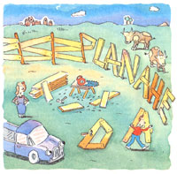

THE quiet night before: " It's only a simple fence' " I insist. "A day's work, maybe two. Three rails, and one top strand of barbed wire on the posts. Dig the holes, fling in the posts, slap on the boards, stretch the wire, and I'm done. What could go wrong?" Joy's eloquent smile says: We have seen these simple projects before. "Oh, any number of things," she replies. Recently, she's been reciting various subtitles from the law of Murphy every time I mention the fence project. "Remember," my wife quotes, " 'Something there is that does not love a wall.'" "
Wall? Oh, that's right. It was always hard for me to picture New England stone fences. Growing up in the West, I imagined them to be of rail construction, but wondered what kind of lathe you'd need for granite. Robert Frost's famous poem opened my eyes: You stack rocks, apparently, into walls that annually collapse. This misconstruction was the salient point of the poem, I explain to her, and the work tuckered him out so completely that he hadn't the strength left to look for rhymes. "Wood fences take less labor," I quip happily.
"It's bad luck to make fun of Robert Frost, " joy says, suddenly very solemn. A Vermont native born and bred, my wife considers Frost to be an American saint; one more irreverent word out of me and I'll have miles to go before I find a place to sleep tonight. A-yup. A-yup.
Next morning, I buy the materials at our little country lumber store: 15 fence Posts, 45 Pine 2 X 6s, gloves and two kinds of posthole diggers, clamshell and auger. The roll of barbed wire is back ordered, so I load up everything in my pickup, trade a few jokes with Hiram and Lloyd behind the counter and then stop on the way home to buy lemons. Nothing like a jug of really sweet lemonade with a pinch of salt in it, ice cubes and lemon rinds afloat; mulled maple cider doesn't make it in summertime Oregon.
From the magic wildwood behind our house, crows call playfully to each other as I work. The pleasant warmth of the day puts a manly sheen of sweat on my back. The first step in building any good Western fence: Dig holes, and dig 'em deep.
Just as I finish the third one, Joy notices that they're 10 feet apart. "That's right," I agree, wiping my brow. "See this string line, with ribbons every 10 feet? That's so the"
"But your boards are only eight feet long," she says. I look at them. Why, sure as shinola, they are, darn it. Miffed, I call up the lumber store, but just as I dial the last number, I remember changing my mind, forgetting to change the list. No use giving the boys heck, but as long as I have them on the phone, do they have any delivery trucks coming this way today? Nope, they don't. Why don't I come get them?
Two hours later, I'm back with the right boards. I dig one more hole, no problem, and fill the last two. I've got two good holes, a proper 10 feet apart.
"Did you remember nails?' Joy asks. "And staples?"
The lumber store is 30 miles away, so it's more than an oversight, but less than a disaster. "Back again?" Hiram inquires. "Forget something?" Lloyd chimes in.
By the time I return, the sun has set in the purple gloaming, and sweet night birds whistle at the shiny moon.
Day Two. I get all but one hole dug by two o'clock. On the last one, the auger hits something hard a few inches down. When I try to pry it out with the stone bar, it won't budge. Have to dig it out. Five hours later, I know what it is.
"A cookstove?" joy asks. "Who'd bury a stove?"
"Don't know." Or even care. Soaking my knots in the brown bath water, I recall all the various ways not to remove a 700-pound lump of rust from a hole in the ground. Eyes shut, I list the casual ties: "Both ... of the shovels ... fff ... broke. The'...mmmboy ... stone bar ... bent. Need a hoist. Tomorrow. But tonight I ... uhh ... wish I had some ... ah, jeez ... muscle salve."
"OK, I'll go into town and get some. Really running up the miles on this project, aren't we?"
The following day, Hiram and Lloyd have many clever things to say as I buy new shovels and a stone bar. When I explain about the woodstove, they snicker convulsively. Elsewhere, I rent a tripod hoist, and go back home. The rest of the day passes like a kidney stone as I excavate the abomination and fill in the crater; this last fence post will make a nice wind sock, unless I want to drop in a yard of concrete. But that's tomorrow's worry, because the sun is already digging a hole in the horizon. Supper, more Sloan's liniment and a comalike slumber end Day Three.
Day Four. The sun launches off its eastern pad and rockets toward the zenith, but I start before first light.
My sawhorses are set up, the boards measured and marked, the power saws readybut the dull saw blade smokes and growls. No way around it: I need a sharp one. Back to the store and: "Well, well. It's Mr. Daily, Lloyd."
"Saw blade," I say, throwing some money down. "Hurry up." Almost home, it occurs to me that I forgot to pick up the barbed wire. I turn around, seething.
"You must miss us somethin' awful," Hiram says. Wit and repartee are the spice of business life in small towns, so his remark eases the tension, as does my joking offer to rip out his tongue and slap him with it until it falls apart.
I'm halfway home again before I recall that I also forgot to get a fence stretcher from the rental place; it's a cunning doohickey with a lever and hook that puffs wire taut. But they don't have any. Back to the lumber store I go, to buy the last one in stock. Hiram and Lloyd nudge each other, but that's all. By the time I get home, the moon is rising in the filthy sky like a new white blister.
Day Five. In the sweltering, miserable heat, I cut the boards and nail them to the posts. Surprisingly, no problems arise. It only remains to stretch the wire along the top, and then it's time for a home brew, homeboy.
I hook the barbed wire on the fence stretcher, and start to pull it tight. One second later, the fence stretcher comes apart when the nut holding the clevis, or trunion, or gudgeon, or pintle, or whatever the lever hinge is called, pops off; the bolt quickly follows. Tall grass and loose dirt suck them both into a lost dimension. The Curse of Frost strikes again.
As I look at the disintegrated tool, a few ugly crows croak unpleasantly from the useless, ugly tangle of thicket. I contemplate emptying a shotgun in their general direction.
Thirty miles later, Hiram and Lloyd listen nervously. "This stretcher was a rip-off," I tell them, dropping it on the counter. I guess Home & Farm Lumber Supply is the place that, when you go there, they have to take you in."
"Well," Lloyd says slowly, we'd be glad to give you another one if we had it. But we don't."
I pick up the handle and rap it on my palm. "No, of course not. One can't expect a hick burg like this to have two of anything useful." I look at both of them. "But assuming your pointless lives depended on telling me, where could I get one today?"
They think. Geological epochs pass. Eventually, two thoughts converge in their wooden heads, and they name a big city, some four hours away.
Nine hours later, I'm back. The moon hangs in the sky like the vacant face of an idiot; hairy bats flap around blindly, and hoarse nightingales scream at each other. By flashlight, I string the barbed wire from post to post, and then shamble inside, husked.
My fingers refuse to uncurl; they've been clenched around a steering wheel for the last five days. "Tired man," Joy observes, taking off my shirt, boots and hat as the bathtub fills.
"Dead," is all I say.
|
 |
|
|